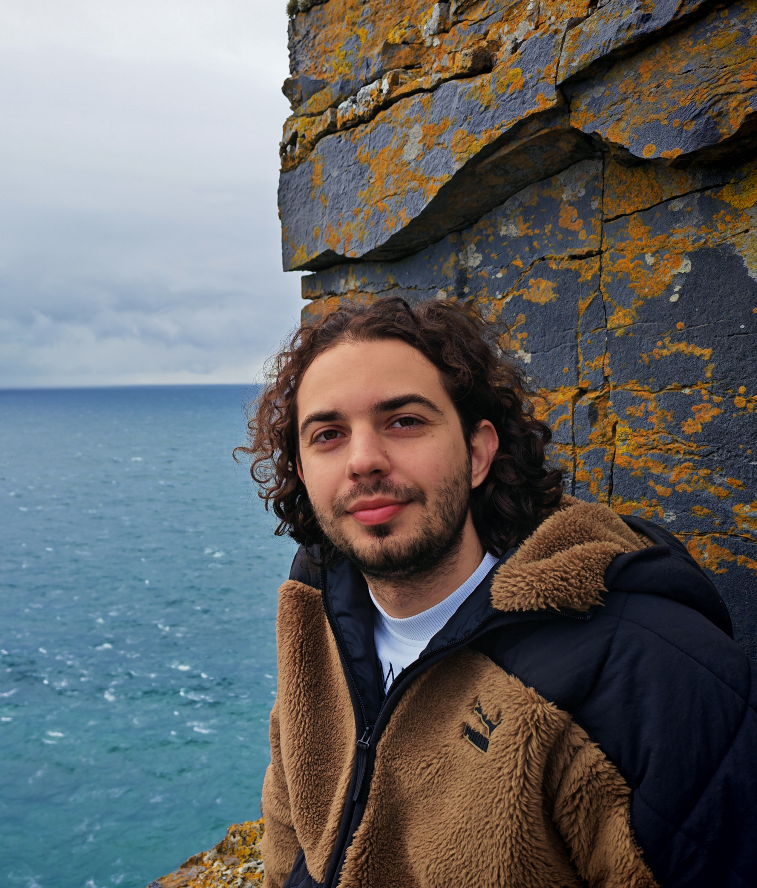

Hi, my name is Dimitrios Tsintsilidas!
I am a third-year PhD student at the Computer Science Department of the University of Warwick, member of the Theory and Foundations group and the Centre for Discrete Mathematics and its Applications (DIMAP), advised by Igor Carboni Oliveira and Christian Ikenmeyer. My research is supported by the Chancellors' International Scholarship.
Previously, I studied Pure Mathematics (Algebra & Logic) at Aristotle University of Thessaloniki and completed my Diploma in Electrical & Computer Engineering with a thesis on Quantum Cryptography at LIP6, CNRS/Sorbonne University.